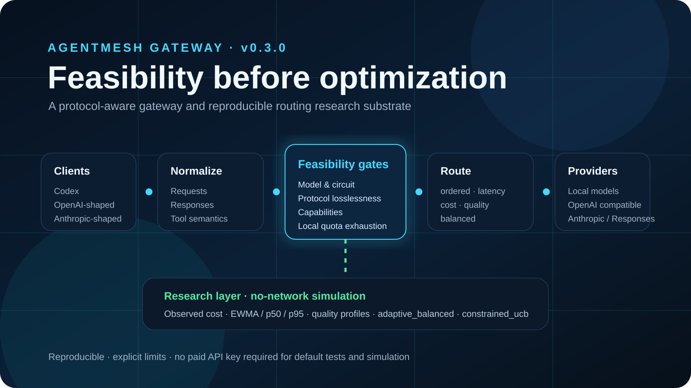

One gateway. Many AI protocols and providers.
AgentMesh Gateway gives AI clients and coding agents a stable entry point, then decides which configured provider is actually eligible before any routing policy is allowed to optimize for latency, cost, quality or order.
What makes AgentMesh different?
Instead of ranking every provider and hoping for the best, AgentMesh first removes choices that would violate the request's model, protocol, capability, circuit or local quota constraints.
Feasibility first
Hard gatesIncompatible providers cannot win simply because they are cheaper or faster.
Evidence-aware runtime
Cost + latencyObserved token usage, cost evidence, EWMA latency and bounded p50/p95 samples are tracked without inventing missing measurements.
Research without live cost
No-networkStatic and adaptive policies can be replayed against deterministic traces without contacting real provider endpoints.
The request journey
The core architecture separates protocol translation, feasibility, policy ranking, provider execution and research instrumentation.
Client request
Chat, Responses-style or Anthropic-shaped traffic arrives.
Normalize
Messages, tools and response semantics enter a protocol-neutral model where possible.
Filter
Model, circuit, protocol-losslessness, capability and quota gates remove invalid choices.
Rank
A production policy ranks only the feasible provider set.
Execute
The provider adapter handles the upstream call, errors, retry and failover boundaries.
Observe
Runtime evidence can feed diagnostics and offline simulation without silently changing policy behavior.
adaptive_balanced and constrained_ucb baselines, with explicit boundaries between production routing and research experiments.About the author
Author profile and official links.

Faramarz Kowsari
Faramarz Kowsari is an author, researcher based in Istanbul. Focusing on the intersection of technology, education, and personal growth, he has published over 80 digital titles on international platforms. His areas of expertise span Artificial Intelligence, prompt engineering, modern trading strategies (Smart Money Concepts & algorithmic trading), as well as classical literature and mindfulness. In addition to writing, he develops web-based educational tools and creates specialized instructional video content.
Official Profiles & Repositories
Research and archival record
Versioned software, reproducibility documentation and permanent citation metadata.
Version
0.3.0Python 3.11+ with CI on Python 3.11, 3.12 and 3.13.
Zenodo
DOILicense
Apache-2.0Open development with explicit provenance and contribution guidance.